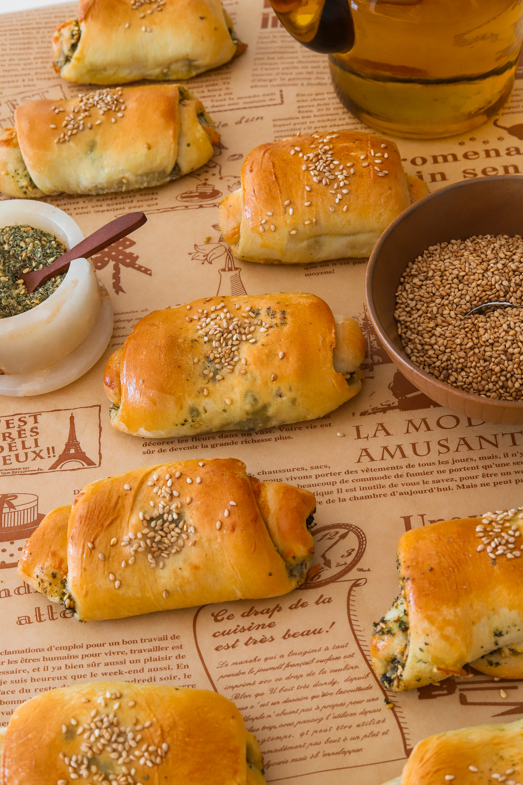

Appetizer
ZAATAR CHEESE ROLLS
PREP TIME:
1 HOUR 30 MINUTES
COOK TIME:
30 MINUTES
TOTAL TIME:
2 HOURS
YIELDS:
12
This the best appetizer you can make! Think of it like a rolled up
manaeesh except the bread is a fluffy and pillowy dinner roll dough.
It's cheesy and packed with so much flavor from the zaatar. Let's
make them!
Jump to Recipe
Appetizer
ZAATAR CHEESE ROLLS
PRINT RECIPE
PIN RECIPE
This the best appetizer you can make! Think of it like a rolled up
manaeesh except the bread is a fluffy and pillowy dinner roll dough.
It's cheesy and packed with so much flavor from the zaatar. Let's
make them!
PREP TIME:
1 HOUR 30 MINUTES
COOK TIME:
30 MINUTES
TOTAL TIME:
2 HOURS
YIELDS:
12
INGREDIENTS
FILLING
- 1 cup mozzarella cheese, shredded
- 1/4 cup feta, crumbled
- 1/4 cup parmesan, grated
- 1/2 cup zaatar
- 1/2 cup extra virgin olive oil
FOR ASSEMBLY
- 12 dinner roll dough balls
- 1 large egg
- 1 tablespoon whole milk
- toasted sesame seeds, to garnish
INSTRUCTIONS
-
Spray a baking tray lined with parchment paper with oil and
place the frozen dough on the pan, spacing them apart.
-
Cover with plastic wrap also sprayed with oil and let it thaw
and rise in a warm place which can take anywhere from 3 to 5
hours. You can also do this the night before.
-
In one bowl, combine mozzarella cheese with feta cheese and
parmesan. Set aside.
-
In another small bowl, mix together zaatar with olive oil. Set
aside.
-
Preheat oven to 350°F.
-
Once the dough is doubled in size, flour your working surface.
-
Stretch each piece of dough out into a thin long rectangle.
Spread the zaatar mixture all across and sprinkle the cheese.
Tightly roll it up and place on a baking tray lined with
parchment paper, seam side down. Repeat with the rest.
-
Whish together the egg with milk to make the egg wash.
-
Brush the tops with egg wash and sprinkle sesame seeds on top.
-
Bake in the oven for 20 to 24 minutes until golden on top and
puffed up.
-
Allow to cool for 10 minutes before enjoying warm!